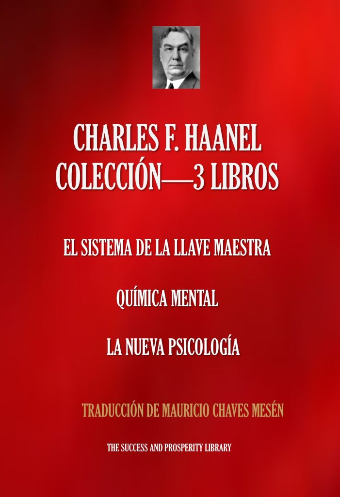

El Sistema de la Llave Maestra
El célebre método progresivo de Haanel para desarrollar el poder mental.
Ver en Amazon →Biblioteca de autor
Pensamiento, concentración y propósito reunidos en un sistema preciso para comprender las leyes de la mente y aprender a utilizarlas.
Los tres clásicos reunidos en un volumen

Charles F. Haanel · ColecciónVer en Amazon →El célebre método progresivo de Haanel para desarrollar el poder mental.
Ver en Amazon →Una exploración de las fuerzas internas que transforman pensamiento en realidad.
Ver en Amazon →Principios psicológicos y espirituales para una vida consciente y creadora.
Ver en Amazon →